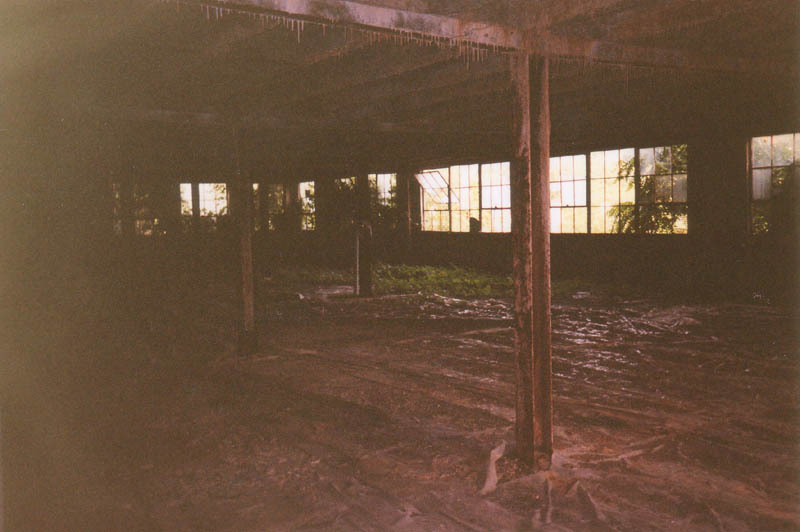

The Columbus Sanitation Department has a building along the railroad tracks on Alum Creek Drive on the southeast side of town, near the Maryhaven Rehabilitation Center. It's located on the north side of the tracks and is fairly new, and in constant operation. On the other side of the tracks, however, there is a similar factory-type building which has been neglected for as long as I can remember. It's fair to call this building abandoned, even though they do use the lot behind it for some disgusting waste storage (as we'll see later). Actually, of all the places I've been, this building best fits the term ruins. Maybe it was the time of year when I explored it--high summer--but it really put me in mind of an ancient city in Africa somewhere, being overtaken by the jungle. As it turns out, the place is owned by Inland Products, Inc., and was used for many years as a "rendering plant."
I first checked this place out with Rookie in July 2001. We parked his car near the chained driveway gate, close to someone's house. This area of town, in case you don't know, isn't the best. There's a fairly run-down apartment complex nearby, along with the local Warner Cable office and a trucking place. Isn't it strange that it's always the poor parts of town where they locate the undesirable public works and waste storage stuff? The north end gets Easton and Polaris and Alum Creek gets the rendering plant. I remember one time hearing on the news that a cellular company had built a tower in Dublin to route all the rich people's cell phone calls, but when it interfered with local cable reception they raised hell and eventually had it taken out. I wonder how long any of them would last across the street from this place.
Getting in was tricky. We found a hole in the chainlink fence along the railroad and slipped inside. We quickly realized that what appeared to be ground level was actually a cement floor with several gaping holes which showed a twenty- or thirty-foot drop into a dank basement. We stayed close to the building and went down a long covered walkway in the direction of the road. All along this were loading docks, which had once served a track siding along the side of the building. The siding had been out of service so long that large trees were growing up between the rails.
The last loading dock was open and we stepped inside. At the front was one big room, cluttered with huge pieces of rusty machinery. An entire wall of windows was broken out, and we could step out onto an adjacent roof which actually felt safer than walking inside.

The next room was longer, with a cathedral-like (is that a word?) peaked ceiling and a big square raised part for ventilation. A couple of pigeons who had painted the floor white beneath the square scared the shit out of us by flying around when we stepped inside.
After looking through some more industrial junk (much of it featuring interesting gauges and dials), we happened upon two big cardboard boxes which proved to contain the most interesting and mystifying part of our journey through the Inland Products Rendering Plant.
The Mystery of the Baddles
What, you ask, are Baddles? They're the toy sensation that never was. And why, you ask, were they never were? Becuase they're all piled in cardboard boxes in this filthy abandoned building.
The boxes were full of blue plastic things which resembled a cross between a wiffleball bat and a bottle of Amaretto. Written on the side of each in raised plastic print was the word BADDLE, which is how we so astutely deduced the product's name.
Along with the Baddles were several hundred red foam rubber balls which crumbled to dust the second you touched them. Apparently you were supposed to hit the red ball with the Baddle. We figured these things had been here a while. Were these the substitutes a Scrooge-like company boss gave his employees for Christmas bonuses one year? Did they actually make these in this building? Or were they brought in later, perhaps by a railroad bum who had robbed a freight shipment from the worst toy store on earth? How did the Baddles get here, and why are they here? Only Jesus knows.
(Okay, Jesus and an anonymous website reader, who e-mailed me with this information: "Those Baddles you found in the building were called 'Baddle Paddles.' They came with reddish foam cubes that hung from the ceiling by a string. You then played indoor tetherball with them. My brother and I, however, found that it was more fun to hit each other with them, making the name "Baddle (Battle) Paddle" ring true. We got them for Christmas in the very early 1970s.")
At the end of this room were two more, one of which had a huge hole in the floor. The far room provided a view into a lower room where an old truck was parked, and, more interestingly, down into a huge, overgrown area which resembled a prison exercise yard. We ended up having to backtrack and go around the building to get to this.
Continue...
Back
forgottenohio@yahoo.com